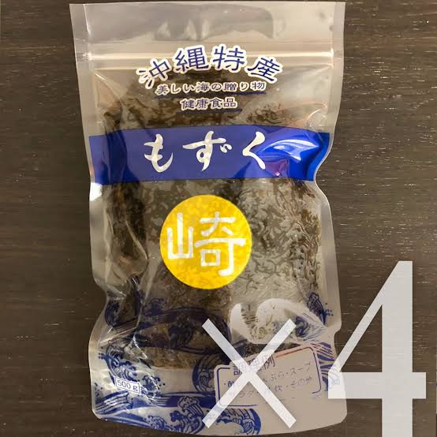

01 / SMALL崎
まずは少量から
250g
宜野座産 塩もずく
販売価格 確認中
沖縄県宜野座産・塩もずく
ひと口ごとに、しっかりとした食感。
宜野座のもずくを、いつもの食卓に。
A TASTE OF GINOZA.
A TEXTURE TO REMEMBER.
 沖縄
沖縄01 PRODUCTS
少しずつ楽しむ方にも、たっぷり使う方にも。
まずは、気になる容量から。

まずは少量から
宜野座産 塩もずく
販売価格 確認中
いつもの食卓に
宜野座産 塩もずく
販売価格 確認中
たっぷり使いたい方へ
宜野座産 塩もずく
販売価格 確認中
価格・送料は確認中です。容量を選んでも、注文や予約は送信されません。
03 AT YOUR TABLE
酢の物だけでは終わらない。
あたたかくても、揚げても楽しめます。
塩抜きしたもずくに、お好みの三杯酢を。しょうがや柑橘を添えれば、さっぱりしたひと皿に。
組み合わせの例もずく・三杯酢・しょうが・柑橘
塩抜きしたもずくを、だしの効いたスープに。卵やねぎを合わせるのもおすすめです。汁物にも食感の楽しさを。
組み合わせの例もずく・だし・卵・ねぎ
塩抜きして水気をしっかり切り、衣と合わせて天ぷらに。にんじんやねぎを加えても楽しめます。
組み合わせの例もずく・天ぷら衣・にんじん・ねぎ
揚げる際は、水分による油はねにご注意ください。
塩もずくは、調理前に塩抜きを。
具体的な手順・時間、保存方法は商品ラベルや販売者の案内に従ってください。掲載内容は食べ方の提案で、正式な調理案内は確認中です。
04 HOW TO ORDER
商品を知って、気になることを聞いて、
納得してからご注文へ。
販売条件を整えてから、受付を開始します。
現在、ご注文・お支払いはできません。
容量と希望数量を決めます。
価格・送料・在庫を確認してください。
受付開始後、公式アカウントへ。
お届け先地域と希望内容を相談します。
合計金額・支払い・配送・返品条件を確認し、正式に注文します。
相談メッセージの準備
塩もずくについて、価格・送料・在庫を教えてください。\n希望容量：○○g／kg\n希望数量：○袋\nお届け先地域：○○県
このHPには入力フォームを設けず、注文情報を保存しません。LINEでの氏名・連絡先・配送先などの取扱いは、個人情報の取扱い（下書き）をご確認ください。
05 QUESTIONS
よくあるご質問
現在は本人確認用の下書きです。注文受付は開始していません。LINE公式URL、価格、送料、支払い方法、配送・返品条件などを確認してから、ご注文導線を公開します。
塩もずくは調理前の塩抜きが必要です。商品ごとの方法・時間は、商品ラベルまたは販売者の案内に従ってください。正式な塩抜き手順は確認後に掲載します。
保存温度、未開封の賞味期限、開封後の取扱いは確認中です。実際の商品ラベルを優先し、確認できるまでは常温保存や長期保存が可能とは判断しないでください。
配送可能地域、配送会社、常温・冷蔵・冷凍の区分、送料、出荷までの日数は確認中です。離島対応や日時指定も含め、確定後にご案内します。
お客様都合、商品不良・破損・誤配送などの場合を分け、連絡期限、返送費用、返金条件を確認中です。正式な条件は注文前に確認できる形で掲載します。
対応可否、最小数量、見積り、配送、請求書などの条件は確認中です。受付開始後、LINE公式へご相談いただく導線を設ける予定です。